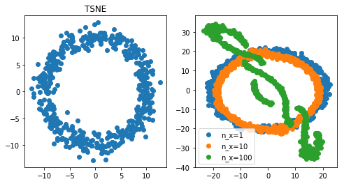
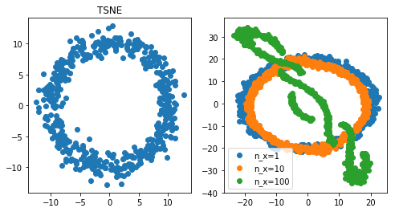

Intro: dimensionality reduction with multicollinearity
It is well known that one cannot meaningfully apply PCA when one has correlated features (see the discussion here, see also multicollinearity). How about new techniques such as t-SNE or UMAP?
We are going to find out experimentally.
Code: comparing PCA, t-SNE, and UMAP
```python
from sklearn.manifold import TSNE
from sklearn.decomposition import PCA
from umap import UMAP
import numpy as np
import matplotlib.pylab as plt
# Define data generating process
phi = np.linspace(0, 6*2*np.pi, 500)
r = 10
x = r*np.cos(phi)
y = r*np.sin(phi)
for name, reducer in [ ('PCA' , PCA())
, ('UMAP', UMAP())
, ('TSNE', TSNE())
]:
# Make design matrix, simulate noisy measurement of the process above. with x first, y last
X = np.vstack([x + np.random.randn(len(x))] + \
[y + np.random.randn(len(y))]).T
_, axs = plt.subplots(1, 2, figsize=(4*2, 4))
axs[0].scatter(X[:, 0], X[:, -1])
for n_x in [1, 10, 100]:
if n_x > 1:
X_with_corr = np.hstack(
[ np.vstack(
[ x + np.random.randn(len(x))
for _ in range(n_x-1)
]).T
, X
])
else:
X_with_corr = X
X_tr = reducer.fit_transform(X_with_corr)
axs[1].scatter(X_tr[:, 0], X_tr[:, -1],
label="n_x={}".format(n_x))
axs[1].legend()
axs[0].set_title(name)
```
 

Conclusion: when PCA and t-SNE fail, UMAP can do well
First observation, PCA fails miserably. t-SNE did ok when a feature was repeated 10 times, but did badly when it was repeated 100 times. UMAP however did pretty well even with very high multicollinearity (100 repeat). At least, for in this specific experiment, UMAP is a clear winner.